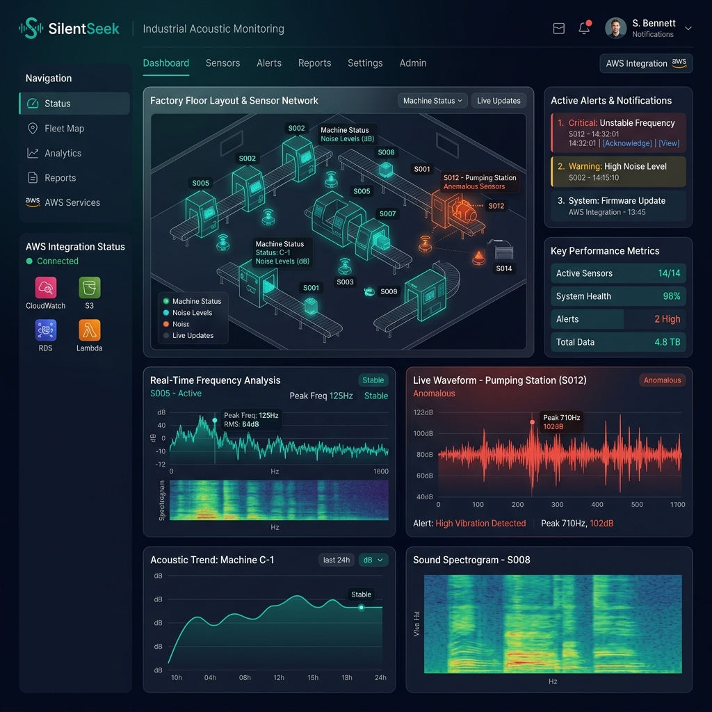

Real-time acoustic sensing platform designed to monitor, identify, and track aerial vehicles in restricted commercial areas using distributed IoT sensor networks and cloud-based AI.
Utilizing highly optimized microcontrollers (ESP32 / Arduino architectures) integrated with environmental acoustic microphone arrays. These decentralized sensor nodes act as our primary data gatherers, functioning autonomously in commercial environments with minimal power consumption.
Our acoustic telemetry relies on a robust AWS infrastructure to ensure real-time performance and scalability. We utilize AWS IoT Core for secure, bidirectional communication with our decentralized sensor nodes. High-throughput acoustic data streams are processed using Amazon EC2 instances optimized for complex machine learning models, performing real-time sound classification. Processed acoustic signature datasets are durably stored in Amazon S3, empowering continuous training of our predictive audio models.
Edge IoT sensors capture acoustic signatures in real-time using ultra-sensitive microphone arrays powered by ESP32 microcontrollers.
Data streams securely to AWS IoT Core via MQTT protocol with end-to-end encryption, ensuring zero data loss at scale.
ML models on Amazon EC2 detect anomalies instantly. Results are stored in Amazon S3 and trigger real-time alerts.
Establishing automated acoustic monitoring around power plants, data centers, and heavy industrial facilities to provide an early warning system against unauthorized aerial vehicles or safety hazards.
Rapidly deployable sensor nodes for commercial flight paths and private enterprise facilities. The self-calibrating network helps operations teams ensure localized airspace safety and monitor noise pollution levels.
Seamless integration with environmental monitoring databases. SilentSeek acts as a passive sensing layer, tracking unauthorized activity in protected nature reserves and preventing poaching through advanced audio profiling.
Founder & Embedded Systems Developer
A cybersecurity student and dedicated developer of modern IoT sensing systems. Combining deep expertise in embedded hardware with cloud-native architectures, Denys founded SilentSeek to address the need for commercially available, high-precision acoustic monitoring. His mission is to democratize advanced sound analytics for industrial safety and critical infrastructure protection.
Monitor your entire acoustic sensor network from a single pane of glass. Our AWS-powered dashboard delivers real-time spectrograms, anomaly alerts, and early-warning security insights.

Visualize low-frequency acoustic signatures in real-time. Detect engine noise, rotors, or unidentified audio patterns instantly.
Set custom dB thresholds and frequency signatures. Receive instant SMS, email, or webhook notifications via AWS SNS.
Deploy over-the-air (OTA) firmware updates to ESP32 nodes and monitor sensor health, battery, and connectivity globally.
SilentSeek's non-invasive acoustic technology can be deployed across various sectors without altering existing machinery or compromising data security.
Safeguard energy grids, substations, and large-scale factories by deploying a distributed acoustic network that detects approaching aerial threats or perimeter breaches long before visual contact.
Secure the skies above restricted commercial zones. Our ESP32 sensor grid analyzes acoustic signatures of low-altitude engines and UAVs, triangulating their trajectory to trigger early-warning systems.
Fill in the form and our team will get back to you within 24 hours.
We'll be in touch within 24 hours.